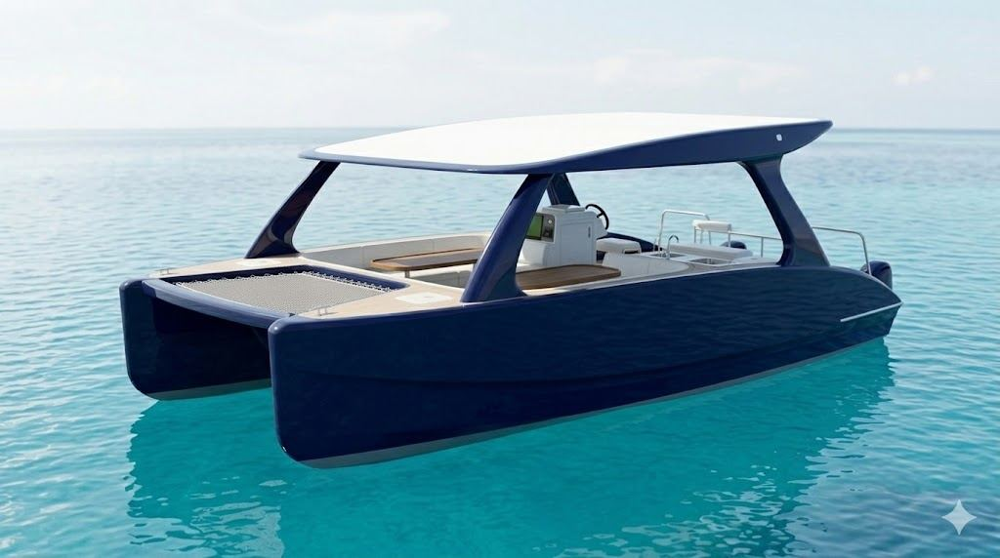
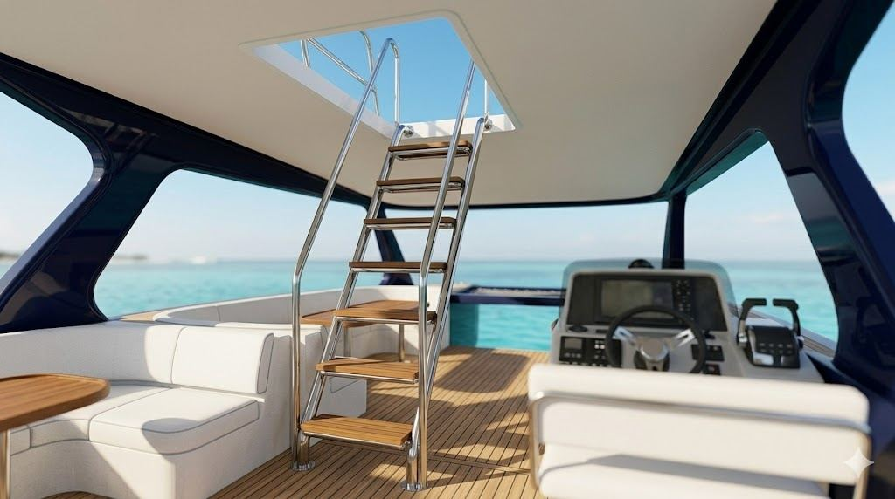
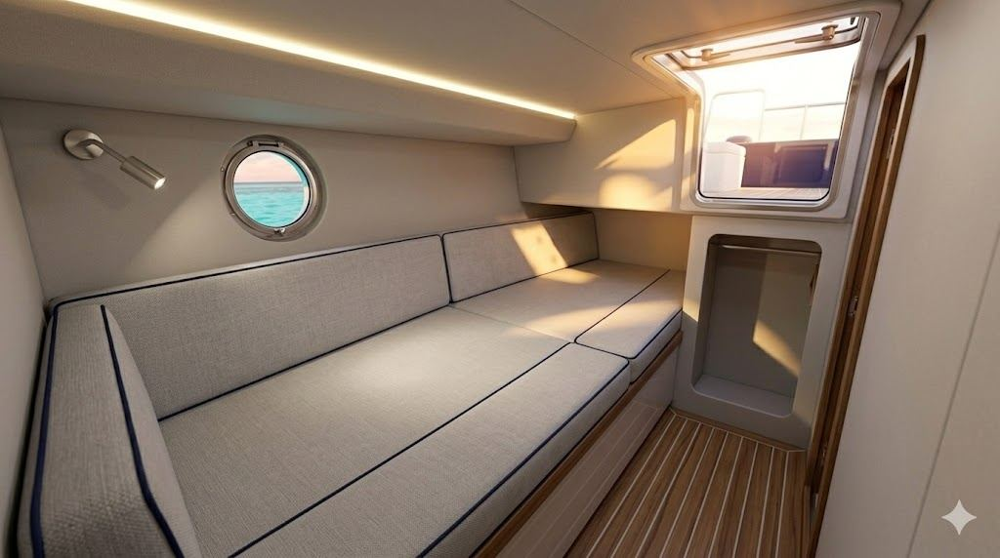
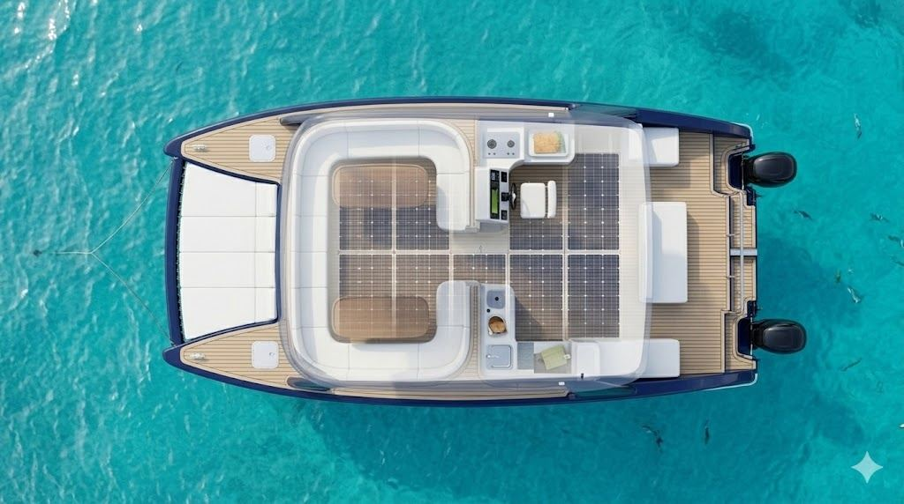
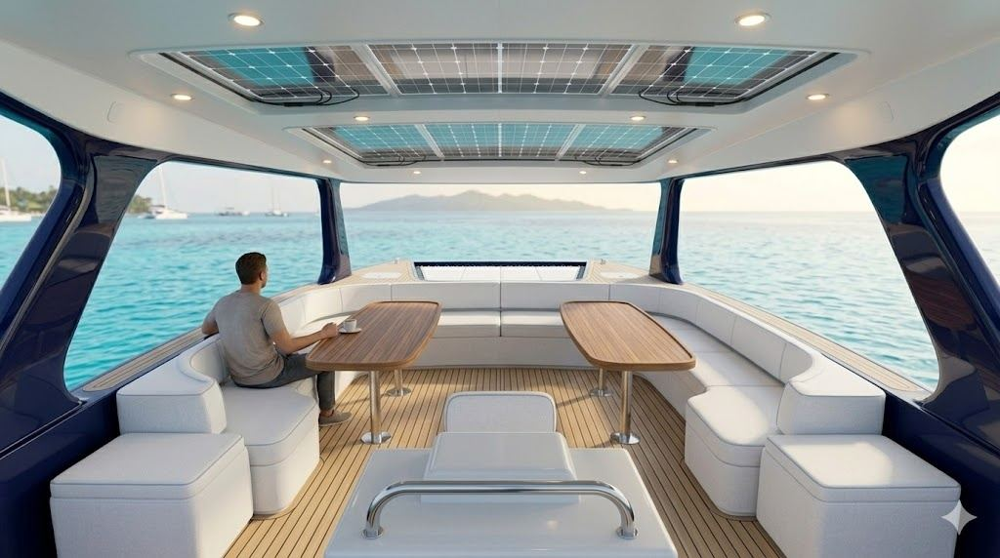
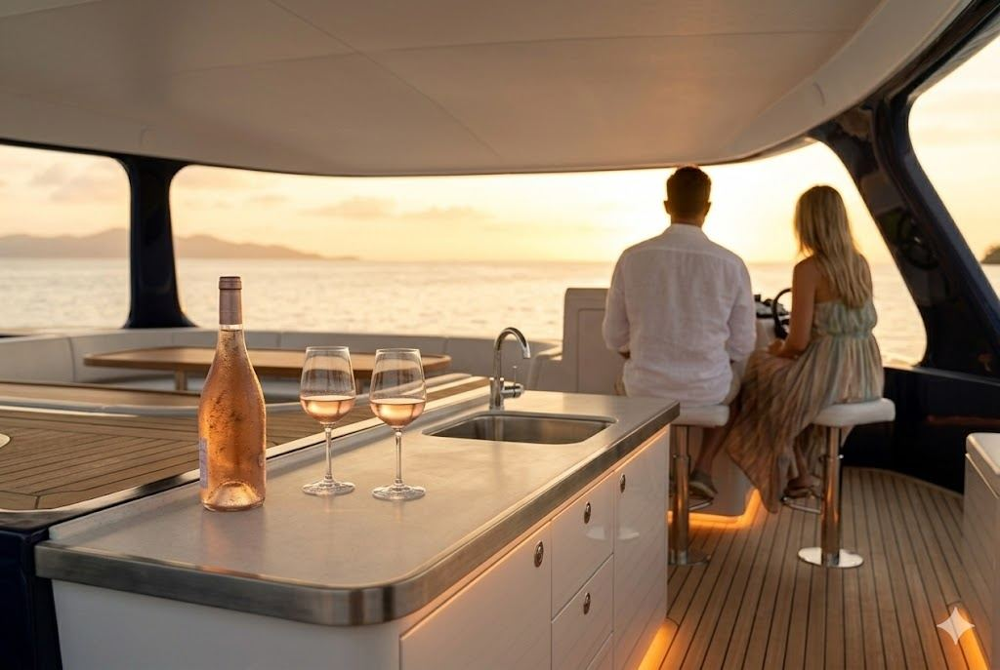

The 9.58-Metre All-Day Cat
FALKA 02
The 02
Same brief as FALKA 01, stretched. Twelve on board for the whole day without anyone finding themselves in a cooler. A proper galley, a proper wet bar, twin aft sunbeds that sleep two on the trip home. The silhouette of an all-day boat, the volume of something bigger.
Built in Thailand on Albert Nazarov’s Samui 9.50 hull by Andaman Boatyard, and finished to FALKA standards on the way home. 9.58 metres by 5.22. Twin outboards. Composite honeycomb. Same displacement brief as FALKA 01 — 13 knot cruise, 20 knot top. Add the Overnighter Pack and a discreet double berth appears below deck, without changing what the boat looks like above.

Signature · Internal Ladder
A polished 316 stainless ladder with teak-clad treads rises from the port side of the cockpit, through a clean rectangular opening in the hardtop, to the sun deck above. No arch to climb around. The top deck reads as an extension of the saloon, not an afterthought above it.
Layout Options
The Samui 9.50 has the volume for three below-deck paths. Pick the one that matches how you’ll use the boat. The topside stays the same.
Option A · Base
The FALKA brief in its plainest form. No cabins, no enclosed heads. Bridgedeck and both hulls given over to saloon, sunbeds, and wet bar. Optional day toilet under the helm.
Recommended · Option B
One owner’s cabin — a 1.9 × 1.3 m athwartships double in the starboard hull, day head in the port. A weekend on the boat without changing what it looks like above deck.
Option C · Twin
A single berth forward in each hull (1.9 × 1.0 m), shared wet head between. Two couples, or a family of four, for longer trips. Forward sunbed volume drops to make room.

Overnighter Pack
A 1.9 × 1.3 m double berth, reading lights, porthole, Silvertex with piped detail — tucked into the starboard hull under the saloon. Stay out for the weekend without the boat looking like a cruiser from the outside.


